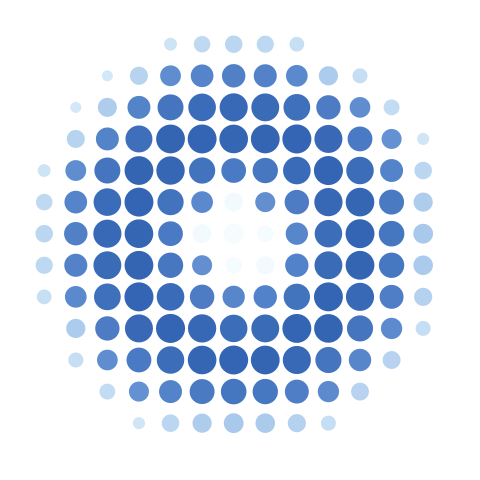
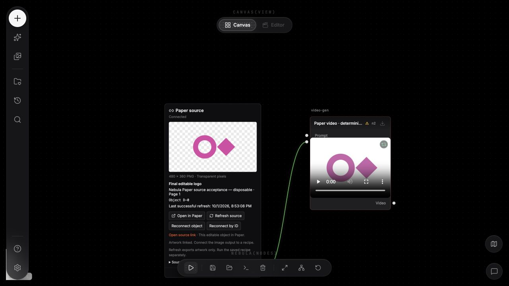
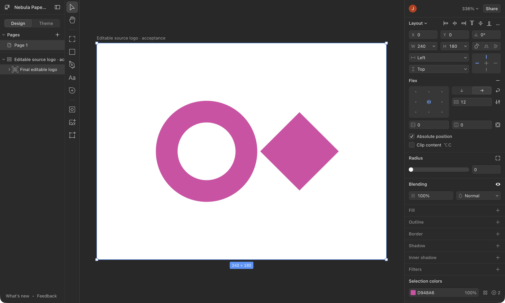
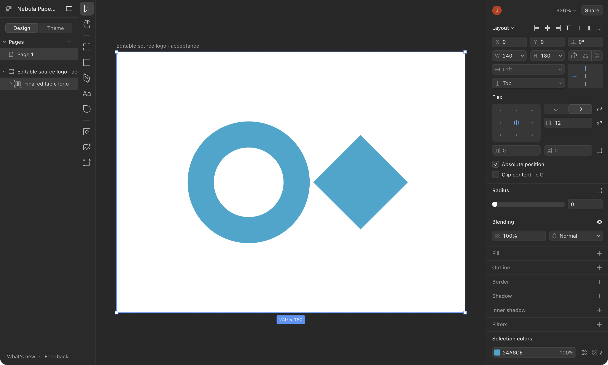
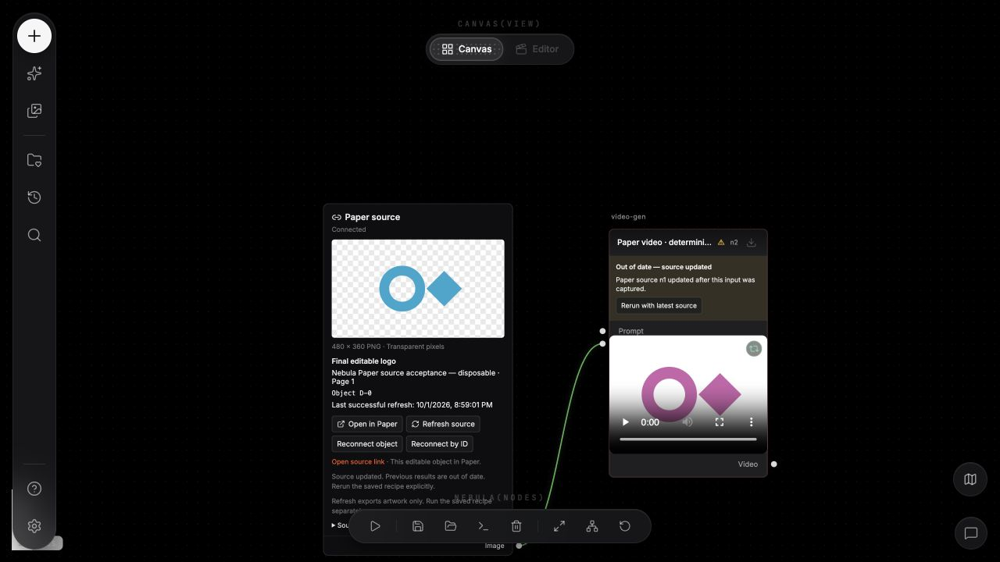
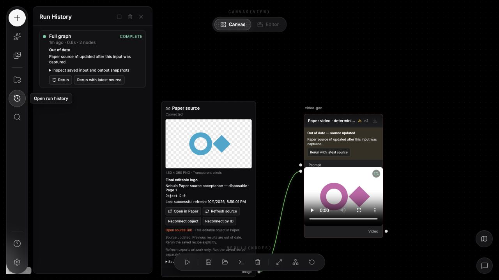
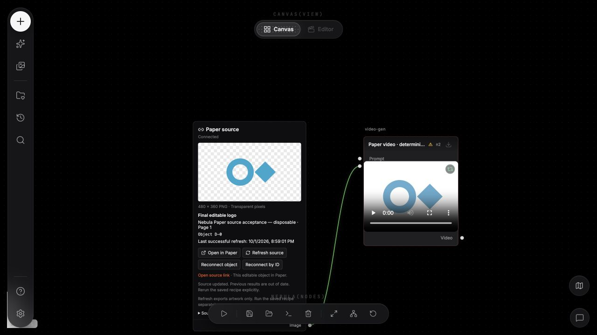
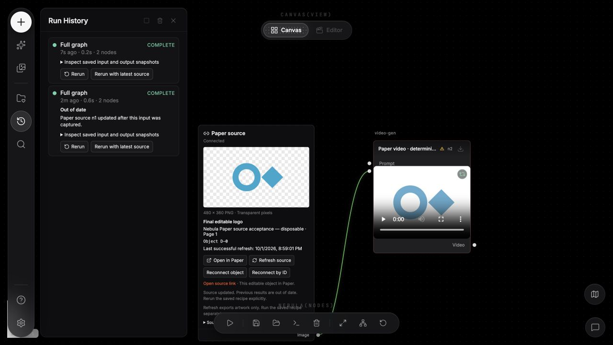

Paper source · Nebula Nodes
Your logo. Still editable.
From the original artwork to a connected canvas.
Nebula Nodes
01 / LINK THE SOURCE
A real source, on the canvas
Link the original Paper artwork.
One editable logo. One source node. Connected downstream.
NEBULA · CONNECTED GRAPH

Nebula Nodes
02 / OPEN IN PAPER
Back to the editable original
One click back to Paper.
Open the linked artwork in the desktop app.
OPEN IN PAPER → DESKTOP

Nebula Nodes
03 / EDIT THE ORIGINAL
Edit it where it lives.
Paper stays the place you edit.
PAPER DESKTOP · SAME LINKED LOGO

Nebula Nodes
04 / REFRESH THE SNAPSHOT
Fresh source. Earlier result.
Refresh does not rerun.
The new artwork is ready. The previous result is marked out of date.
New snapshotEarlier output kept
NEBULA · SOURCE REFRESH


Nebula Nodes
05 / RERUN BY CHOICE
An explicit next run
Same recipe. New snapshot.
Choose the saved recipe with the latest Paper source.
NEBULA · SAVED RECIPE


Nebula Nodes
06 / KEEP THE HISTORY
A connection with memory
Every version stays.
The connection remains intact. Both runs keep their original source snapshots and results.
NEBULA · BOTH RUNS RETAINED

Paper source · Nebula Nodes
Editable in Paper.
Connected in Nebula.
Refresh first. Rerun by choice. Keep every result.
Paper-linked sources